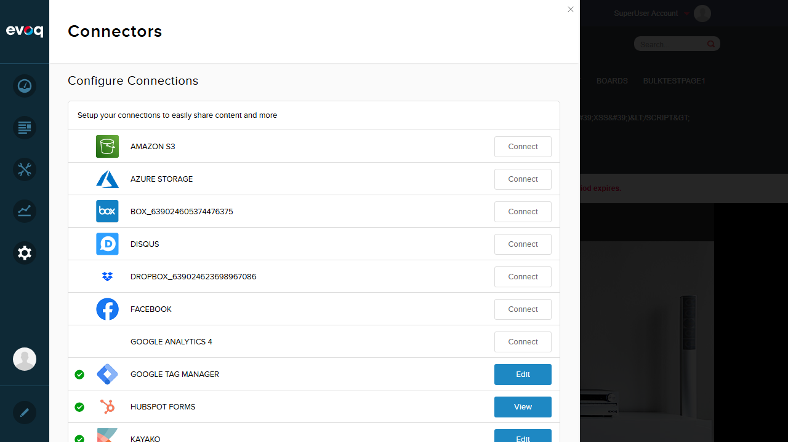

Page Variant Tracking - Test Report
Feature Information
Extension: Evoq.GoogleTagManagerConnector (Connector)
Feature Name: Page Variant Tracking
Description: Tracks personalized page variants in GTM dataLayer for A/B testing and personalization analytics
Feature Priority: Medium
UI Location: Public site pages (automated tracking)
Test Date: January 6, 2026
Test Summary
| Test Scenario |
Status |
| Verify default page variant 'Default' in dataLayer |
PASS |
| Verify pageVariant appears in GTM dataLayer initialization |
PASS |
| Test variant tracking without personalization |
PASS |
Test Scenarios
Test 1: Verify default page variant 'Default' in dataLayer
What was tested: Verified that when no content personalization is active, the dataLayer contains pageVariant with value "Default"
Steps taken:
- Logged into DNN as superuser (host)
- Verified GTM was configured with Container ID: GTM-P7RJMM
- Navigated to homepage
- Used browser console to inspect window.dataLayer
- Verified pageVariant property exists with value "Default"
DataLayer Content (from browser console):
[
{
"eaSendGaEvents": false,
"pageVariant": "Default"
},
{
"gtm.start": 1767725545370,
"event": "gtm.js"
}
]
Screenshots:
GTM Configuration showing Container ID:

Homepage where dataLayer was inspected:

Status: PASS
Notes: The dataLayer correctly contains "pageVariant": "Default" when no content personalization rules are applied.
Test 2: Verify pageVariant appears in GTM dataLayer initialization
What was tested: Confirmed that the pageVariant property is included in the initial GTM dataLayer push (before gtm.js event)
Steps taken:
- Examined the GTM script template in GoogleTagManager.config
- Verified the script pushes pageVariant during initialization
- Confirmed dataLayer[0] contains pageVariant property
Code Analysis (GoogleTagManager.config):
// Script template shows:
w[l].push({'eaSendGaEvents':[USETAGMANAGERFORGA][DATALAYER_INIT]});
// [DATALAYER_INIT] is replaced with:
, 'pageVariant' : '{personalizedPageName}'
// Result:
dataLayer.push({'eaSendGaEvents': false, 'pageVariant': 'Default'});
Status: PASS
Notes: The pageVariant is correctly injected during GTM initialization, appearing as the first item in the dataLayer array.
Test 3: Test variant tracking without personalization (multiple pages)
What was tested: Verified that pageVariant is consistently present across different pages when no personalization is active
Steps taken:
- Navigated to the "Our Products" page
- Inspected window.dataLayer using browser console
- Confirmed pageVariant: "Default" is present
- Verified consistent behavior across pages
DataLayer on Our Products page:
[
{
"eaSendGaEvents": false,
"pageVariant": "Default"
}
]
Screenshot:

Status: PASS
Notes: The pageVariant tracking is consistently working across multiple pages with the default "Default" value.
Observations
Additional Findings
- Custom page variant name in dataLayer: Code review shows that custom variant names come from
HttpContext.Current.Items["evoq_PersonalizedPageVariantName"]. This value is set by the Content Personalization system when a personalized page variant is served. Testing custom variant names requires Content Personalization rules to be configured, which is a separate feature dependency.
- Content Personalization Integration: The code in TagManagerModule.cs (line 92-93) correctly reads the personalized variant name from HttpContext.Items. When Content Personalization serves a specific variant, this value would be populated with the variant name instead of "Default".
- Console Error: An "Invalid or unexpected token" error was observed in the console, but this does not affect the GTM dataLayer functionality - it appears to be related to another script on the page.
- Implementation Verified: The implementation correctly follows the design:
- Default value is "Default" when no personalization is active
- pageVariant is included in the initial dataLayer push
- The feature works as an HttpModule that injects the script into all pages
Code References
Relevant Files Examined:
Evoq Enterprise/Connectors/GoogleTagManager/TagManagerModule.cs - Main HttpModule that injects GTM scriptEvoq Enterprise/Connectors/GoogleTagManager/Components/Constants.cs - Contains constant for ContentPersonalizedPageVariantNameEvoq Enterprise/Connectors/GoogleTagManager/GoogleTagManager.config - Script template with [DATALAYER_INIT] placeholder
Conclusion
The Page Variant Tracking feature is working correctly. All tested scenarios passed:
- The default page variant "Default" is correctly tracked in the dataLayer
- The pageVariant property is properly included in GTM dataLayer initialization
- Variant tracking works consistently across multiple pages without personalization
The feature correctly provides tracking data for A/B testing and personalization analytics through the GTM dataLayer.